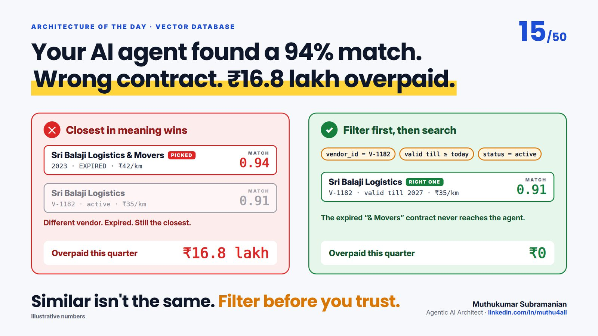

Your AI Agent Found the Wrong Contract. It Looked Similar Enough.
By Muthukumar Subramanian · Agentic AI Architect

A freight bill from Sri Balaji Logistics lands in the accounts inbox of an auto-components maker in Hosur. The company's new payments agent does what it was built to do. It looks up the rate contract before approving.
It searches by meaning: "rate contract for Sri Balaji Logistics". The top hit scores 0.94. It's a contract with Sri Balaji Logistics & Movers, a different vendor, signed in 2023 and expired since. Rate: ₹42 per km. The right contract, ₹35 per km and valid till 2027, scored 0.91. Second place.
The agent approved every freight bill that quarter at ₹42. About 2.4 lakh km later, the internal auditor found the gap: ₹16.8 lakh overpaid. (The company, the vendors and every number here are illustrative. In India, every vendor master has five Sri Balajis.)
The agent didn't hallucinate. It did exactly what similarity search does. It found the closest thing.
Similar isn't the same. And money needs the same.
The architecture today
On Day 12 we turned a dark data lake into something an agent can read. Today is about where that reading usually ends up: a vector database.
Every document gets split into chunks. An embedding model turns each chunk into a long list of numbers that captures its meaning. Chunks that mean similar things end up close together. A question gets turned into numbers the same way, and the database returns the nearest chunks.
That's brilliant for meaning. Ask "what's the penalty for late delivery?" and it finds the clause that says "liquidated damages", even though no word matches. Keyword search never could.
But it has a blind spot. It has no idea that "Sri Balaji Logistics" and "Sri Balaji Logistics & Movers" are two different legal entities with two different GSTINs. To an embedding, they're nearly the same thing. A vendor ID, an expiry date or a GSTIN isn't a meaning. It's a fact. Facts need exact answers.
👉 [IMAGE: A-day15-2-in-article-architecture.png]
Caption: Contracts get embedded and tagged. A search gateway sits between the agent and the stores: exact match first, filters always, meaning second. Grey is what you already have. Amber is new.
Where AI plugs in now: a search gateway, not a raw index
Don't let the agent query the vector index directly. Put a small gateway in between, with three rules:
→ Exact match first. If the invoice carries a vendor ID or GSTIN, look that up in the ERP's vendor master. No similarity involved.
→ Filters always. Every chunk carries its labels: vendor ID, valid-till date, status, and who's allowed to see it. The search only runs inside the chunks that pass. The expired "& Movers" contract never even competes.
→ Then meaning, with keywords. For the real questions, combine keyword search and vector search (hybrid search) and merge the two rankings. Names with near-twins get caught by the keywords. Paraphrases get caught by the vectors.
Most vector stores now support this. pgvector sits inside Postgres, next to the full-text search you may already run. Qdrant and Weaviate have filters and hybrid queries built in.
A 0.94 match is a guess with a decimal point.
Where it's heading with agents
Today, a person asks and reads the result. In two or three years, agents will query these stores thousands of times a day, as their working memory. Contracts, policies, past tickets, even their own notes from yesterday.
At that scale the vector index stops being a search feature. It becomes a system of record, and it'll need what every system of record needs: access control on every chunk, expiry dates, owners, and a log of what each agent retrieved before it acted. That log is the replay we talked about on Day 10. If the auditor asks why the agent paid ₹42, you want to show which chunk it read.
👉 [IMAGE: A-day15-3-in-article-search-rules.png]
Caption: Five search rules for any agent that touches money. Screenshot it before your next design review.
Watch it work
Same query, same meaning space. First by nearest dot only, then with filters.
👉 [GIF: A-day15-4-in-article-meaning-space.gif]
Caption: Without filters, the closest contract wins, even an expired one from another vendor. With filters, only valid, active, same-vendor chunks compete. All details illustrative.
Pros
→ Search finally works on meaning: paraphrases, synonyms, Tamil-English mixed notes
→ It reuses the documents you've already parsed, and it can live inside the Postgres you already run
→ With filters and hybrid search, the agent gets fewer, better chunks, which also cuts model cost
Cons
→ A similarity score isn't a confidence score. A 0.94 can still be wrong, and nothing in the number tells you
→ Change the embedding model and old and new vectors don't mix. You re-embed the whole index and test again
→ Tuning the keyword-versus-meaning balance is trial and error on your own data. There's no universal setting
The hard parts
The labels are the real work, not the database. Somebody has to decide that every chunk carries a vendor ID, a valid-till date and a status, and then keep them right when a contract is amended by email.
Filters have a trap too. In some setups the filter runs after the nearest-neighbour search, so a narrow filter can quietly return fewer results than you asked for. Test with your messiest vendor, not the demo one.
And permissions don't survive embedding by default. An HR letter turned into a vector is still an HR letter. Copy the access rule onto every chunk.
That labelling job is becoming a role. Some teams call it a Context Engineer: the person who decides what the agent may retrieve, with which labels, and how fresh it must be. The title is still settling. The job is already there in every company that put an agent on top of documents.
The opportunity
Two markets, both open.
First, search and recommendation rebuilt on meaning. Indian e-commerce, insurance and government portals still run on keyword search that fails on "silk saree for Pongal under ₹5,000" or a query typed half in Tamil. Meaning-based search, with filters for price, stock and region, is a clear upgrade businesses will pay for.
Second, "vector hygiene" as a service. Audit the indexes behind every agent: missing labels, expired chunks still live, near-twin vendors, mixed embedding models, chunks without access rules. Fix them, then run it monthly. Every company that rushed an agent into production last year has this debt, and few know it.
Tools to try
pgvector inside Postgres, with its full-text search for hybrid · Qdrant or Weaviate for filters and hybrid queries · Pinecone or Milvus for managed scale · Elasticsearch or OpenSearch if you already run them · embedding models from OpenAI, Cohere, Google or an open model you host yourself.
Your turn 👇
Would you let an AI agent pay against a 0.94 match? Yes or no.
Tag the person who maintains your vendor master and knows how many Sri Balajis are in it.
Day 15 of 50 · follow along. Tomorrow: Day 16 · Your AI Agent Read the 2022 Price List. It Cost You ₹6 Lakh.